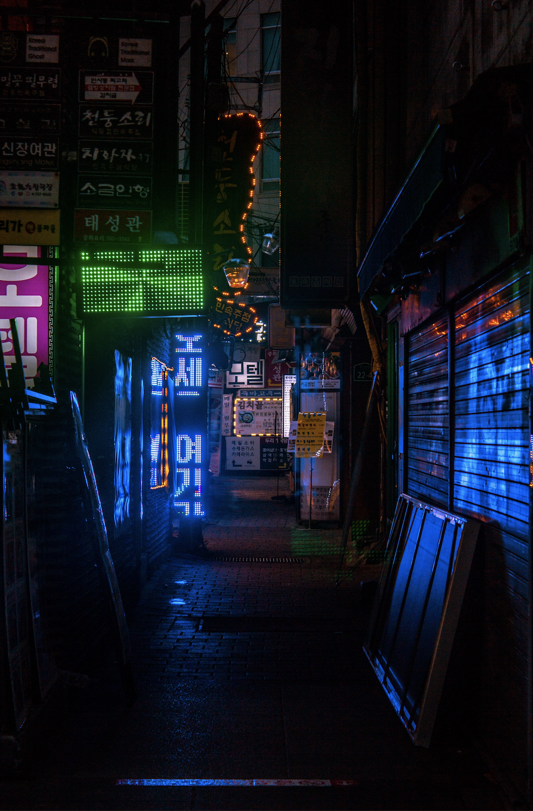

Insadong 인사동

If you are looking to find the most Korean place in Seoul, Insadong is a place for you. Streets of Insadong are filled with stores that sell traditional Korean gifts, merchs, and other cool stuffs. But the true beauty lies in all the hidden alleyways. Although it may looks sketchy at first, the orange lights brighten up the narrow path giving warmth to the place. You may end up at a place with neon signs that create beautiful illusions.